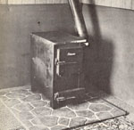
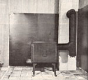

Two low-cost approaches to safe woodstove installation:
Every well-informed woodstove owner wants to have the safest installation possible . . . but many folks have discovered that, when they follow the recommendations for safe clearances set down by the National Fire Protection Association, they end up with their heaters smack-dab in the middle of the room. Specifically, the NFPA states that no wood-or coal-burning device should be placed less than 36 inches from an unprotected combustible surface. So, when you add three feet of clearance to about three feet of stove, and include at least a foot of base pan extension in front (for safe ash removal) ... a typical wood heater will protrude some seven feet from a wall! That amounts to a fair hunk of living space lost, and also means that your hot stove will interfere with normal traffic in the room.
There is, however, a set of NFPA stipulations which state that woodburning appliances can be safely placed closer to walls if an appropriate heat shield is protecting all combustible material. In fact, when such a protector is in place, it's possible to position your stove a mere 12 inches from a flammable barrier!
At the onset of the 1979-1980 heating season, two of MOTHER's staff members were presented with clearance problems when installing their own woodstoves, and we're sure that anyone who's even contemplating wood heat will find the approaches they took-to establish the safest possible installations while maintaining maximum living space-interesting.
By positioning a sheet-metal "guard" one inch out from a combustible surface, it's possible to significantly reduce the temperature to which the flammable wall would otherwise be subjected by a woodstove's radiant heat. The metal barrier-in this case, 24-gauge galvanized steel-is itself heated by the stove, and establishes a rising convective air flow in the space behind the sheet ... effectively cooling the back of the steel and preventing the flammable wall from becoming dangerously overheated.
Building a sheet-metal thermal barrier is very easy, but there are a few important considerations to keep in mind while planning the design. First, there must be a one- to two-inch space between the floor and the steel (to allow air to pass underneath and behind the barrier). And, of course, the lumber that braces the metal (we used 1-1/16" square stock) must be positioned vertically to avoid impeding the convective flow.
In addition, the wooden supports should be insulated to prevent conductive heat transfer from the steel. We accomplished this by nailing the wood strips to the wall independently-deep-sinking each nail a quarter-inch into the lumber-and then slipping a section of aluminum window molding between the steel and the wood before tacking the pieces together with 1-1/4" aluminum roofing nails. (Because aluminum helps to rapidly dissipate heat, there is very little temperature rise in the wooden stock.)
Constructing the two "tin" barriers displayed in the accompanying photo took roughly two hours, and the cost of materials (including a 4' X 12' sheet of 24-gauge galvanized steel, 24 feet of window molding, three 1-1/16" X 1-1/16" X 8' boards, twenty 1-1/4" roofing nails, and a can of flat black high-temperature paint) totaled less than $20. (And part of the steel sheet was actually used to underlie the brick base upon which the stove sits.) The heater is now a mere 16 inches from the wall, and the wood behind the barrier is barely warm to the touch, even when the stove is hopping hot!
Another-perhaps simpler-answer to the woodstove heat dissipation problem can be found right at your local heating supply store. Buy a 4' by 10' sheet of foil-covered fiberglass duct board, and slice it to match the dimensions of the wall area you're going to protect.
After the thermal barrier's been cut to size, it's a simple matter to locate the studs in the wall and secure the panels firmly-foil side out-using 1-1/4" aluminum roofing nails. (You can also "trim" the exposed edges with aluminum tape for a neater appearance.) Finish the face of the boards with heat-resistant paint (The Dampney Company Dept. TMEN, 85 Paris Street, Everett, Massachusetts 02149-makes an excellent product in at least ten different colors) ... and your project's complete. The insulative material will absorb heat evenly over its entire surface, and-providing the stove is positioned a commonsense 18" or so from the wall-the wood behind the shield will remain protected ... at an easy-to-live-with cost of about $20!
EDITOR'S NOTE: Woodstove owners: Don't miss the report on page 99.
|
 Because the walls are lined with foil-covered fiberglass duct board, this woodstove can safely stand only 18 from the combustible barrier. |
 Here galvanized steel, positioned an inch from the paneled wall, provides a convective flow of cooling air around the woodstove. |
|